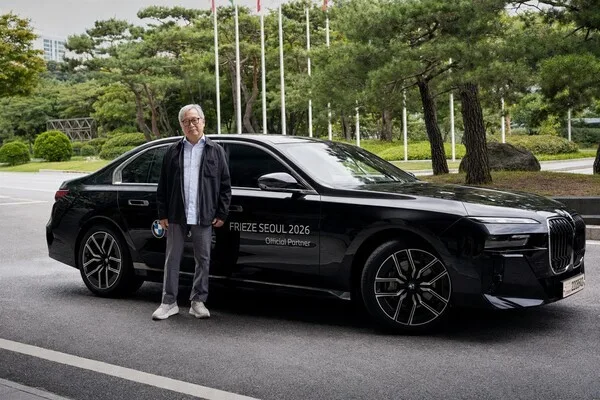
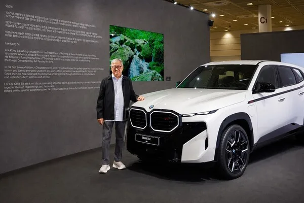
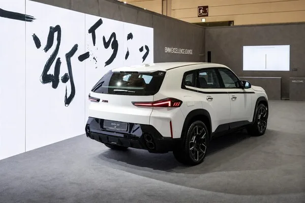

▲ 프리즈 서울 2026 BMW 엑설런스 라운지에 전시된 XM 레이블. 이강소 작가의 붓글씨 회화 작품이 배경을 채운다
1. 5년 연속, 프리즈 서울의 공식 파트너로 선 BMW
BMW코리아가 9월 2일부터 5일까지 서울 강남구 코엑스에서 열린 세계적 아트페어 '프리즈 서울 2026'에 공식 파트너로 참여했다. 2022년 프리즈 서울이 처음 열린 이래 5년 연속 이어지는 파트너십으로, 올해는 30개국 125개 이상의 주요 갤러리가 참가하는 등 역대 최대 규모로 치러졌다. BMW는 행사 기간 동안 7시리즈·i7 등 20대의 럭셔리 클래스 차량을 VIP 공식 셔틀로 투입하는 한편, 시승 프로그램도 함께 운영했다.

▲ 'FRIEZE SEOUL 2026 Official Partner' 문구가 새겨진 BMW 7시리즈. 행사 기간 VIP 셔틀로 20대가 투입됐다 ⓒ BMW코리아
2. 이강소 작가는 누구인가
이번 협업의 주인공은 한국 실험미술을 대표하는 이강소 작가다. 그는 서라벌예술대학 회화과를 졸업하고 1970년대 초 대구현대미술제를 이끈 주역 중 한 명으로, 한국 실험미술의 개척자로 평가받는다. 첫 개인전이었던 '무제(Untitledscape)' 이후 반세기 넘게 회화는 물론 퍼포먼스·설치·사진·영상 등 다양한 매체를 넘나들며 예술의 경계를 확장해왔다. 오리·소 같은 동물을 소재로 한 회화와 여백을 강조한 붓질로도 잘 알려져 있으며, 국내외 미술관과 비엔날레에 꾸준히 초청돼온 작가다.
📍 참고로 알아두면 좋은 것
1970년대 한국 실험미술은 기존 회화·조각의 틀을 벗어나 개념미술, 설치, 퍼포먼스 등 새로운 형식을 실험한 흐름을 말한다. 대구현대미술제는 이 시기 지역을 기반으로 실험미술을 이끈 대표적인 행사로, 이강소를 비롯한 여러 작가들이 이곳을 통해 활동 반경을 넓혔다.
3. XM 레이블, 작품 속 조형 요소로 서다
BMW코리아는 이강소 작가와 함께 회화·영상·드로잉·모빌리티가 유기적으로 어우러지는 몰입형 전시를 BMW 엑설런스 라운지 전체에 구현했다. 이 공간에서 BMW의 고성능 모델 'XM 레이블'은 단순한 차량 전시가 아니라, 작가의 작품 세계와 공간을 잇는 조형적 요소로 배치됐다. 도시의 기억과 이동, 기운의 흐름을 공간 전반에 담아낸 연출 속에서 XM 특유의 강렬한 존재감과 이강소 작품 특유의 자유분방한 붓질이 한데 어우러지는 것이 이번 전시의 핵심이다.

▲ 전시장에서 XM 레이블 옆에 선 이강소 작가. 벽면에는 작가의 이력과 작품 세계를 소개하는 텍스트가 함께 걸렸다 ⓒ BMW코리아
4. BMW가 반세기 넘게 이어온 '아트카' 전통
이번 협업의 배경에는 BMW가 1975년부터 이어온 '아트카(Art Car)' 프로젝트가 자리한다. BMW 아트카는 프랑스 레이싱 드라이버 에르베 풀랭의 제안으로 조각가 알렉산더 칼더가 BMW 3.0 CSL 경주차에 직접 그림을 그리면서 시작됐다. 이후 앤디 워홀, 로이 리히텐슈타인, 데이비드 호크니, 제니 홀저, 제프 쿤스 등 세계적인 현대미술 거장들이 잇따라 참여했고, 2017년에는 중국 작가 차오페이가 참여해 디지털 형태의 아트카를 선보이기도 했다. 자동차를 하나의 캔버스이자 조형물로 바라보는 이 전통이, 이번 XM 레이블과 이강소 작가의 협업으로도 이어진 셈이다.
| 항목 | 내용 |
|---|---|
| 파워트레인 | 4.4L V8 트윈터보 M 플러그인하이브리드 |
| 시스템 합산출력 | 748마력 |
| 0-100km/h | 3.8초 |
| 배터리 용량 | 25.7kWh(순수 전기 주행 약 60km) |
| 국내 판매가 | 2억 2,770만원 |

▲ XM 레이블 후측면. 뒤편 대형 패널에는 이강소 작가의 붓글씨 회화가 걸려 'BMW EXCELLENCE LOUNGE' 공간을 채운다 ⓒ BMW코리아
5. 자동차 브랜드와 아트페어, 왜 만나나
완성차 브랜드가 아트페어에 공식 파트너로 참여하는 것은 단순한 브랜드 노출을 넘어, 차량을 하나의 문화적 오브제로 자리매김시키려는 전략으로 풀이된다. BMW는 프리즈 서울 외에도 전 세계 주요 아트페어와 미술관에 꾸준히 후원을 이어오고 있으며, 국내에서도 이번이 5년째 파트너십이다. XM처럼 브랜드 최상위 고성능 모델을 예술 작품과 나란히 배치하는 방식은, 차량의 기술적 특징보다 브랜드가 지향하는 감성과 정체성을 전달하는 데 초점을 맞춘 것으로 해석된다.
BMW코리아는 이번 전시 외에도 프리즈 서울 기간 동안 7시리즈·i7 시승 프로그램을 함께 운영하며, 아트페어를 찾은 관람객들에게 브랜드를 경험할 다양한 접점을 제공했다. 관련 소식은 BMW코리아 공식 홈페이지에서 확인할 수 있다. 바로가기
✅ BMW XM x 프리즈 서울, 이것만은 확인하세요
· 프리즈 서울 2026은 9월 2일~5일 서울 코엑스에서 개최, BMW는 5년 연속 공식 파트너
· 한국 실험미술 선구자 이강소 작가와 협업, BMW 엑설런스 라운지 전체를 전시 공간으로 구성
· XM 레이블은 단순 전시가 아닌 작품과 공간을 잇는 조형 요소로 배치
· BMW 아트카 전통은 1975년 알렉산더 칼더부터 시작해 반세기 넘게 이어짐
· XM 레이블은 748마력 PHEV, 국내 가격 2억 2,770만원
6. 정리
BMW XM과 이강소 작가의 이번 협업은 자동차를 감상의 대상이자 조형 요소로 재해석했다는 점에서 눈길을 끈다. 5년째 이어진 프리즈 서울 파트너십과 반세기 넘은 아트카 전통이 맞물리며, BMW는 국내에서도 브랜드의 문화적 정체성을 꾸준히 쌓아가고 있다. 748마력의 고성능 SUV가 예술 작품 옆에 나란히 선 이번 전시는, 자동차 브랜드가 소비자에게 다가가는 또 다른 방식을 보여준 사례로 남을 전망이다.